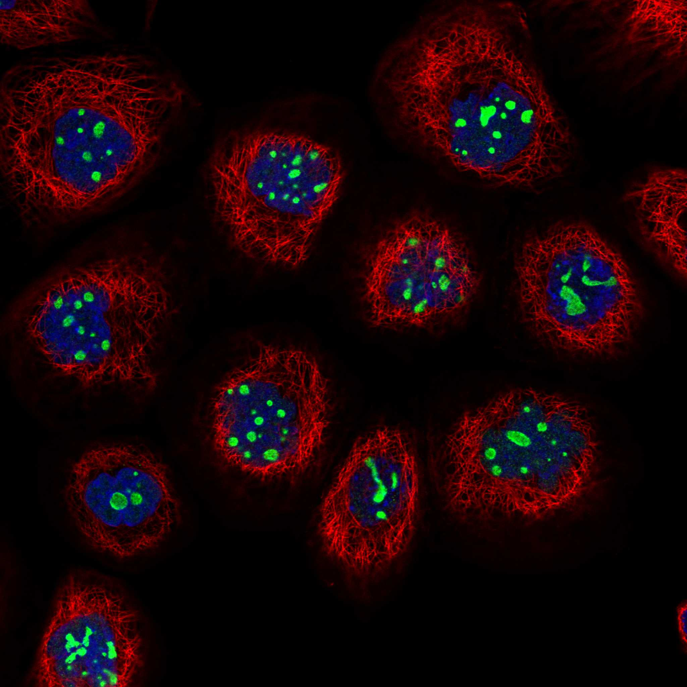
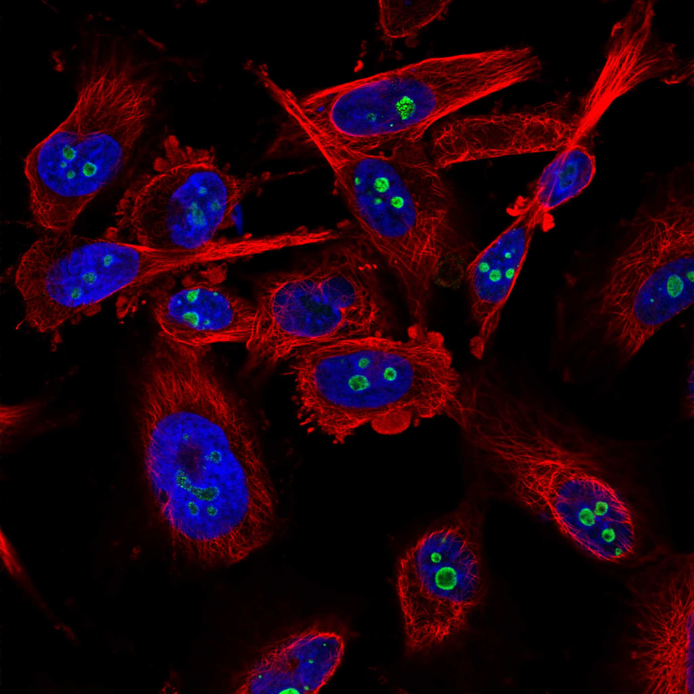

type: protein-evaluation gene: "GNL3" date: 2026-06-02 tags: [protein-scout, nucleolus, evaluation] status: scored pm: 58 ---
GNL3 核蛋白评估报告
1. 基本信息
| 项目 | 内容 |
|---|---|
| 基因名 / 别名 | GNL3 / E2IG3, NS |
| 蛋白全称 | Guanine nucleotide-binding protein-like 3 |
| 蛋白大小 | 549 aa / 62.0 kDa |
| UniProt ID | Q9BVP2 |
| AlphaFold | AF-Q9BVP2-F1 (v6) |
2. 评分总览
| 维度 | 得分 | 满分 | 加权后 | 关键证据摘要 |
|---|---|---|---|---|
| 核定位特异性 | 9/10 | ×4 | 36 | UniProt Nucleus/nucleolus (ECO:0000269 实验); HPA Enhanced Nucleoli rim + Nuclear bodies; GO nucleolus IDA |
| 蛋白大小 | 8/10 | ×1 | 8 | 549 aa (400-600 范围) |
| 研究新颖性 | 6/10 | ×5 | 30 | PubMed strict=58，≤60 档，中等新颖性 |
| 三维结构 | 9/10 | ×3 | 27 | 21 PDB 结构 (EM, 2.5-4.3A); AF mean pLDDT 75.2 |
| 调控结构域 | 4/10 | ×2 | 8 | GTP 结合结构域 (IPR006073, PF01926)，非染色质调控 |
| PPI 网络 | 8/10 | ×3 | 24 | STRING 15 全部 >0.9; IntAct 15; 核糖体生物合成+MDM2/STAT3 网络 |
| 互证加分 | -- | -- | +0.5 | HPA IF (Enhanced) + UniProt 实验级 + GO IDA 三源定位一致 |
| 加权总分 | 133/180** | |||
| 归一化总分 (÷1.83) | 72.7/100** |
3. 详细分析
3.1 核定位证据
| 来源 | 定位 | 可信度 |
|---|---|---|
| UniProt | Nucleus (ECO:0000250); Nucleus, nucleolus (ECO:0000269 ×3) | 实验级 |
| GO-CC | nucleolus (GO:0005730, IDA:BHF-UCL); nuclear body (GO:0016604, IDA:HPA); chromosome (GO:0005694, IDA:HPA) | 实验级 |
| HPA IF | Enhanced reliability; Nucleoli rim (main) + Nuclear bodies + Mitotic chromosome (additional) | 高可信度 |
HPA IF 状态: Enhanced 级别可信度，多细胞系 (A-431, U-2 OS, U-251 MG) 均显示 Nucleoli rim 定位。IF 图像可用。
结论: 核仁 rim 定位高可信度，UniProt + GO + HPA 三源一致，定位置信度极高。
3.2 蛋白大小评估
评价: 549 aa (62.0 kDa)，处于中等偏大范围 (400-600)。
3.3 研究现状
| 指标 | 数值 |
|---|---|
| PubMed strict (Title/Abstract+gene/protein) | 58 |
| PubMed symbol_only | 71 |
| PubMed broad | 178 |
关键文献: 1. Lebdy R et al. (2023). "The nucleolar protein GNL3 prevents resection of stalled replication forks." *EMBO Rep*. PMID: 37965896 2. Meng Q et al. (2020). "Integrative analyses prioritize GNL3 as a risk gene for bipolar disorder." *Mol Psychiatry*. PMID: 32826963 3. Zhang S et al. (2022). "GNL3 Regulates SIRT1 Transcription and Promotes Hepatocellular Carcinoma Stem Cell-Like Features." *J Oncol*. PMID: 35432540 4. Dai R et al. (2021). "G protein nucleolar 3 promotes Non-Hodgkin lymphoma progression by activating Wnt/beta-catenin." *Exp Cell Res*. PMID: 34762898 5. Zhu Z et al. (2021). "RNA binding protein GNL3 up-regulates IL24 and PTN to promote osteoarthritis." *Life Sci*. PMID: 33358901
评价: PubMed strict=58，中等研究量。集中于癌症和干细胞生物学，核仁功能方向有较好基础。
3.4 三维结构分析
| 指标 | 数值 |
|---|---|
| UniProt 长度 | 549 aa |
| PDB 条数 | 21 (全部 EM, 2.47-4.30 A) |
| AlphaFold mean pLDDT | 75.2 |
| pLDDT >90 | 41.9% |
| pLDDT 70-90 | 28.4% |
| pLDDT 50-70 | 6.7% |
| pLDDT <50 | 23.0% |
PAE 图:
评价: 21 个 PDB 结构 (全部冷冻电镜)，覆盖全长，分辨率 2.5-4.3A。AF 预测良好 (pLDDT 75.2, 41.9%>90)。结构研究非常充分。
3.5 结构域分析
| 来源 | 结构域 |
|---|---|
| InterPro | IPR030378 (GNL3-like), IPR014813, IPR006073 (GTP-binding), IPR027417 (P-loop NTPase), IPR050755 |
| Pfam | PF08701, PF01926 (GTP-binding) |
染色质调控潜力分析: GTP 结合蛋白/GTPase 结构域为主，非经典染色质调控结构域。但通过 MDM2 稳定化间接影响 p53 通路和细胞周期调控。
3.6 PPI 网络
实验验证互作 (IntAct, physical association):
| Partner | 方法 | PMID | 功能类别 | 调控相关？ |
|---|---|---|---|---|
| MYC | anti bait coIP | 17353931 | Oncogenic TF | Yes |
| STAT3 | pull down | 21988832 | Transcription factor | Yes |
| ESR1 | cosedimentation | 21182205 | Nuclear receptor | Yes |
| ESR2 | cosedimentation | 21182203 | Nuclear receptor | Yes |
| SMNDC1 | anti bait coIP | 17353931 | Splicing/SMN | Partial |
| LYAR | anti bait coIP | 17353931 | Nucleolar protein | Partial |
| HDGF | TAP | 21907836 | Chromatin-associated | Yes |
| WRAP73 | anti bait coIP | 17353931 | Centriole protein | No |
STRING 预测互作 (combined score >0.9, top 15):
| Partner | Score | 实验分 | 功能类别 | 调控相关？ |
|---|---|---|---|---|
| EBNA1BP2 | 0.998 | 0.878 | rRNA processing | No |
| PES1 | 0.997 | 0.866 | rRNA processing | No |
| GNL2 | 0.997 | 0.817 | Nucleolar GTPase | No |
| NIFK | 0.996 | 0.934 | rRNA processing | No |
| BOP1 | 0.995 | 0.908 | rRNA processing | No |
| MDM2 | 0.979 | 0.735 | p53 pathway | Yes |
评价: STRING 15 个互作伙伴全部 >0.9，高密度核糖体生物合成网络。IntAct 含 MYC、STAT3、ESR1 等关键转录调控因子。PPI 高度可靠且网络结构清晰。
3.7 多库互证
| 维度 | 来源 | 结果 | 是否一致 |
|---|---|---|---|
| 三维结构 | AlphaFold + PDB | 21 PDB | 有实验结构 |
| 结构域 | UniProt/InterPro/Pfam | GTP 结合结构域 | 多库一致 |
| PPI 网络 | STRING + IntAct + UniProt | 核糖体生物合成核心 | 多源互证 |
| 核定位 | HPA/UniProt/GO | Nucleolus/Nucleoli rim | 三源一致 |
互证加分明细: HPA IF (Enhanced) + UniProt 实验级 + GO IDA 三源核仁定位一致 (+0.5) 总计: +0.5
4. 总体评价
推荐等级: ****o (4/5)
核心优势: 1. 核仁定位高可信度，HPA Enhanced + UniProt 实验级 + GO IDA 三源互证 2. 21 个 PDB 结构，结构研究极其充分 3. PPI 网络高度连接 (STRING 全部 >0.9)，含 MYC/STAT3/ESR1 转录因子互作 4. 与 MDM2-p53 通路直接关联，具有潜在的应激响应调控功能
风险/不确定性: 1. 主要功能为 rRNA processing/核糖体生物合成，非经典转录调控因子 2. GTPase 而非染色质/DNA 结合蛋白 3. PubMed 文献量中等 (strict=58)
下一步建议:
- [ ] 利用已有 PDB 结构进行分子对接和小分子筛选
- [ ] 研究 GNL3 在核仁应激下的 TE 调控功能
- [ ] 探索 GNL3-MYC/STAT3 轴在 TE 激活中的作用
5. 数据来源
- GeneCards: https://www.genecards.org/cgi-bin/carddisp.pl?gene=GNL3
- Protein Atlas: https://www.proteinatlas.org/ENSG00000163938-GNL3
- PubMed: https://pubmed.ncbi.nlm.nih.gov/?term=%22GNL3%22%5BTitle/Abstract%5D
- UniProt: https://www.uniprot.org/uniprot/Q9BVP2
- STRING: https://string-db.org/network/9606.ENSG00000163938
- AlphaFold: https://alphafold.ebi.ac.uk/entry/Q9BVP2


PPI 网络
| Partner | Source | Score/Evidence |
|---|---|---|
| EBNA1BP2 | STRING | 0.998 |
| PES1 | STRING | 0.997 |
| GNL2 | STRING | 0.997 |
| NIFK | STRING | 0.996 |
| BOP1 | STRING | 0.995 |
| ASCC2 | IntAct | psi-mi:"MI:0398"(two hybrid po |
| MYC | IntAct | psi-mi:"MI:0006"(anti bait coi |
| CIAO1 | IntAct | psi-mi:"MI:0006"(anti bait coi |
HPA IF 图像已本地嵌入。
PAE 图像说明: AlphaFold PAE 图像已重新获取并嵌入（见下方 PAE 图像修正块）；结构判断仍结合 pLDDT 与 PAE 综合判断。
<!-- AF_PAE_REPAIR_START --> PAE 图像修正（2026-06-05）: AlphaFold 提供 predicted aligned error 图像；此前“PAE 图像暂无数据”的表述为未获取/未嵌入导致。

<!-- DOMAIN_HUMANPPI_REPAIR_START -->
Domain/SMART 与 humanPPI 补充（2026-06-06）
SMART / UniProt domain
| Source | Data | |
|---|---|---|
| UniProt | Q9BVP2 | |
| SMART | 未在 UniProt xref 中检出 SMART 条目 | |
| UniProt Domain [FT] | DOMAIN 131..312; /note="CP-type G"; /evidence="ECO:0000255\ | PROSITE-ProRule:PRU01058" |
| InterPro | IPR030378;IPR014813;IPR006073;IPR027417;IPR050755; | |
| Pfam | PF08701;PF01926; |
humanPPI / HPA Interaction
Source: https://www.proteinatlas.org/ENSG00000163938-GNL3/interaction
| Partner | Datasets | AF3/HPA structure |
|---|---|---|
| CEP19 | Intact, Biogrid | true |
| DNAJC2 | Biogrid, Opencell | true |
| NLE1 | Intact, Biogrid | true |
| PPP2R5A | Intact, Biogrid | true |
| RPL11 | Biogrid, Opencell | true |
| RPL19 | Biogrid, Opencell | true |
| RPL4 | Biogrid, Opencell | true |
| RPL5 | Biogrid, Opencell | true |
<!-- DOMAIN_HUMANPPI_REPAIR_END -->